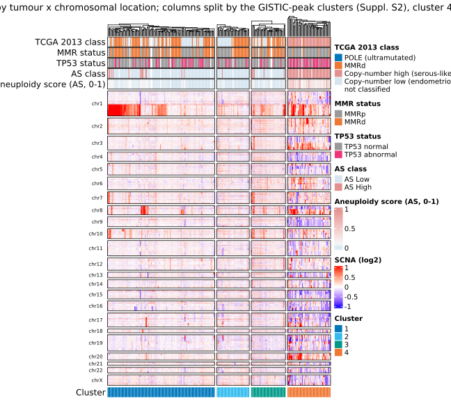
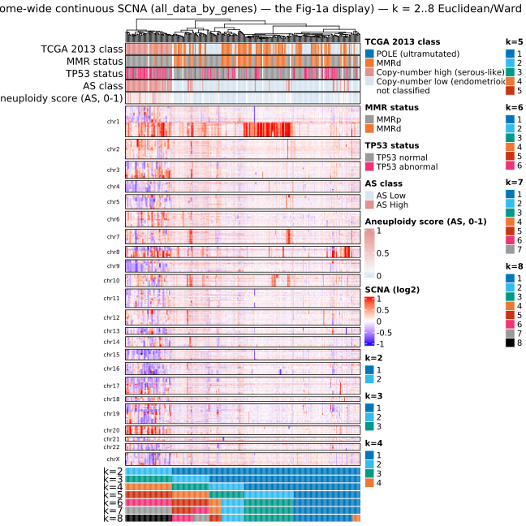
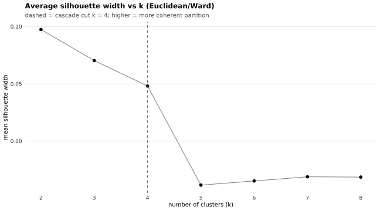
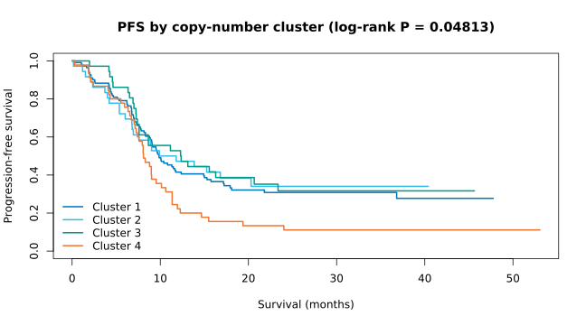
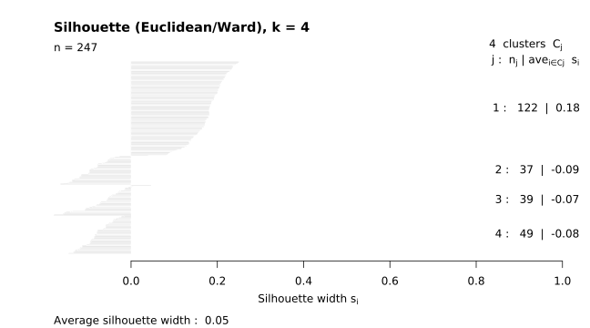
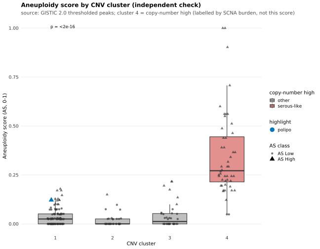
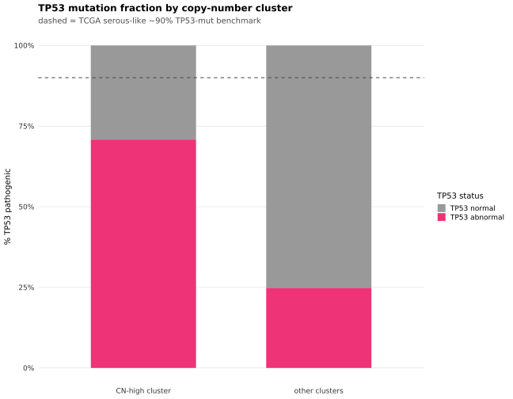
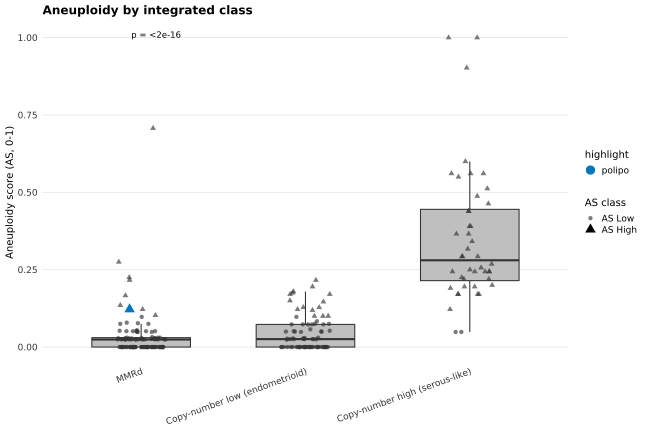
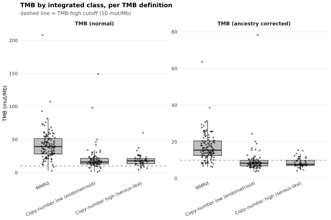

Last updated: 2026-09-25
Checks: 7 0
Knit directory:
attend_aneuploidy/analysis/
This reproducible R Markdown analysis was created with workflowr (version 1.7.2). The Checks tab describes the reproducibility checks that were applied when the results were created. The Past versions tab lists the development history.
Great! Since the R Markdown file has been committed to the Git repository, you know the exact version of the code that produced these results.
Great job! The global environment was empty. Objects defined in the global environment can affect the analysis in your R Markdown file in unknown ways. For reproduciblity it’s best to always run the code in an empty environment.
The command set.seed(20260622) was run prior to running
the code in the R Markdown file. Setting a seed ensures that any results
that rely on randomness, e.g. subsampling or permutations, are
reproducible.
Great job! Recording the operating system, R version, and package versions is critical for reproducibility.
Nice! There were no cached chunks for this analysis, so you can be confident that you successfully produced the results during this run.
Great job! Using relative paths to the files within your workflowr project makes it easier to run your code on other machines.
Great! You are using Git for version control. Tracking code development and connecting the code version to the results is critical for reproducibility.
The results in this page were generated with repository version 53d4271. See the Past versions tab to see a history of the changes made to the R Markdown and HTML files.
Note that you need to be careful to ensure that all relevant files for
the analysis have been committed to Git prior to generating the results
(you can use wflow_publish or
wflow_git_commit). workflowr only checks the R Markdown
file, but you know if there are other scripts or data files that it
depends on. Below is the status of the Git repository when the results
were generated:
Ignored files:
Ignored: .Rhistory
Ignored: .Rproj.user/
Ignored: .mcr_cache/
Ignored: data/aneu_scores.csv
Ignored: data/attend_barcodes.csv
Ignored: data/attend_data.xlsx
Ignored: data/clinical_gianlu_data.csv
Ignored: data/cnv_annotations/
Ignored: data/gistic/
Ignored: data/hrd_scores.csv
Ignored: data/msi_scores.csv
Ignored: data/old2_gistic/
Ignored: data/old_gistic/
Ignored: data/seg/
Ignored: data/tcga_2013/
Ignored: data/tmb_scores.csv
Ignored: data/variant_annotations/
Ignored: gistic2.sif
Ignored: output/clean_data/
Ignored: output/gistic_input/
Note that any generated files, e.g. HTML, png, CSS, etc., are not included in this status report because it is ok for generated content to have uncommitted changes.
These are the previous versions of the repository in which changes were
made to the R Markdown
(analysis/07-molecular-classification.Rmd) and HTML
(docs/07-molecular-classification.html) files. If you’ve
configured a remote Git repository (see ?wflow_git_remote),
click on the hyperlinks in the table below to view the files as they
were in that past version.
| File | Version | Author | Date | Message |
|---|---|---|---|---|
| html | 53d4271 | sceriff0 | 2026-09-25 | :wrench: site building |
| Rmd | 61b26bc | bolt3x | 2026-09-21 | :memo: Say on the page which cut reports 07 and 10 are reporting |
| Rmd | 0c4840a | bolt3x | 2026-09-14 | :art: One vocabulary, one order, and a page that says why a figure is missing |
| Rmd | d688d09 | bolt3x | 2026-09-13 | :art: One spelling and one palette per concept, across every report |
| Rmd | bc4329e | bolt3x | 2026-09-13 | :bug: The clustering was never peak-restricted, and the page could not say so |
| Rmd | 0348325 | bolt3x | 2026-09-13 | :art: AS High / AS Low, arcsine + t-test on the score, no n=, arms back to red/light blue |
| Rmd | 8666e4c | bolt3x | 2026-09-07 | :bug: A default is not a measurement — POLE in three tiers, mutation status in three states |
| Rmd | 793a8f2 | bolt3x | 2026-09-07 | :recycle: Reorder the site 00-11, split 07, fold concordance into 01, add ProMisE |
Question. Which copy-number cluster is the copy-number-high / serous-like group, and where does the 2013 TCGA cascade disagree with the ProMisE / WHO-ESGO classification the guidelines actually specify? Cohort. All patients with GISTIC output for the clustering; both cascades are drawn on the full master. Reads. GISTIC thresholded peaks in data/gistic/ (produced per runbooks/gistic.md), ASCETS scores in data/ascets/, the long MAF (for the POLE hotspot screen), and attend_master_joined. Out of scope. Why Euclidean / Ward.D2, and how the serous-like call is made directional -> 00-methods. TP53 and the gene panels themselves -> 08-tp53-and-gene-panels. The same Fig-1a on TCGA’s own data -> 09-tcga2013-fig1a. Options beyond this reproduction -> runbooks/classification_options.md.
Reproduces the TCGA integrated genomic classification of endometrial carcinoma (Kandoth et al., Nature 2013, papers/nature12113.pdf) on the ATTEND cohort, and asks which copy-number cluster is enriched for aneuploidy — the hallmark of the copy-number-high / serous-like group. Turning an unlabelled cluster into a serous-like call is inferred from the copy-number data and is not part of TCGA’s methodology; how, and why it is directional, is in 00-methods.
This report runs both classifications on the same patients: the 2013 TCGA cascade it always ran, and the ProMisE / WHO-ESGO four-group algorithm the current guidelines specify. Neither is presented as the answer — the first is the historical reproduction that 09-tcga2013-fig1a validates against TCGA’s own labels, the second is the call a reviewer will ask for. Where they disagree is tabulated below.
A priority cascade (TCGA Fig. 2b). POLE is not a tier here — it was removed from this cascade because ATTEND has no POLE-ultramutated cases — so it starts at MMRd. Note that the ProMisE section below now screens for POLE rather than assuming its absence, which is the difference between a tested negative and an untested one:
The copy-number split comes from clustering copy-number profiles (their Fig. 1a; cluster 4 = serous-like), then resolving the serous-like call per attend_tcga_serous_rule. Because the default is “cluster_only”, the serous call is earned from copy number alone; the TP53-enrichment QC below then confirms the cluster is genuinely ~90% TP53-mutant, i.e. that it corresponds to TCGA’s serous-like group — a non-circular validation.
The master for the cascade and its covariates, and the barcode crosswalk, because GISTIC and .seg sample ids are sequencing barcodes while the master is keyed on pid. Both are wrapped so a missing input degrades to a skipped section rather than an error.
master <- get_master() |> add_molecular_classes()
# POLE, and therefore ProMisE, needs the LONG maf: pole_ultramutated() matches the
# exonuclease-domain hotspots against a protein-change column, which the wide per-gene
# status table does not carry. Both are wrapped — with no MAFs the POLE column stays absent,
# add_promise_class() returns NA for everyone, and promise_counts() says why, rather than
# every patient silently becoming NSMP.
maf_long_cls <- tryCatch(load_maf_long(), error = function(e) NULL)
# barcode -> pid crosswalk (the same derivation every other report uses)
cw <- tryCatch(
build_barcode_pid(load_gianlu_clinical_data(), make_id_cfg()),
error = function(e) { note_skip("crosswalk unavailable: ", conditionMessage(e)); NULL }
)
have_master <- !is.null(master)
have_cw <- !is.null(cw)
# TMB definitions available on the master: upstream first, then the recomputed set.
tmb_defs <- c(upstream = attend_cols$tmb, attend_cols$tmb_set)
if (have_master) tmb_defs <- tmb_defs_present(master)
# ProMisE, on the master, before anything downstream reads it. POLE first (it is the top
# tier, so it has to exist before the hierarchy is applied), then the four-group call.
if (have_master && have_cw) {
pole_tbl <- tryCatch(
pole_ultramutated(maf_long = maf_long_cls, crosswalk = cw,
tmb_tbl = master |> transmute(pid, TMB_SCORE = .data[[attend_cols$tmb]])),
error = function(e) { note_skip("POLE call unavailable: ", conditionMessage(e)); NULL })
if (!is.null(pole_tbl)) master <- master |> left_join(pole_tbl, by = "pid")
master <- add_promise_class(master)
}NOTE: POLE call unavailable: ℹ In argument: `barcode = as.character(.data[["ID"]])`.
Caused by error in `.data[["ID"]]`:
! Column `ID` not found in `.data`.have_promise <- have_master && "promise_class" %in% names(master) &&
any(!is.na(master$promise_class))TCGA clusters one matrix and draws another, and both come from the same GISTIC run. Keeping them separate is what makes this report’s heatmap the paper’s heatmap.
The clustering input is exactly what TCGA clustered (Kandoth et al., Suppl. Methods S2): “thresholded relative copy number data in significantly reoccurring amplifications or deletions regions identified by GISTIC 2.0.” There is one clustering feature and no fallbacks — the arm-level / bin-level proxies have been removed. load_gistic_thresholded() builds it from data/gistic/:
The figure input is what the Fig. 1a legend describes: “The heat map shows SCNAs in each tumour (horizontal axis) plotted by chromosomal location (vertical axis)” — the whole genome, on a continuous colour scale. That is a different matrix, and load_gistic_continuous() reads it from all_data_by_genes.txt in the same data/gistic/: genome-wide, continuous copy number per gene, not peak-restricted. Drawing the clustering matrix instead is what previously made this heatmap something other than Fig. 1a — a few hundred peak genes on a five-step colour scale, genome-ordered but not the genomic landscape.
So: cluster the peaks, display the genome. The columns of the heatmap are split and coloured by the peak-based clusters, and the body underneath them is the continuous genome-wide landscape those clusters were learned from a subset of.
Both matrices need GISTIC, on the DRAGEN .seg — the recipe is runbooks/gistic.md. Until data/gistic/ is populated, every CNV/cascade section renders as scaffolding. If all_data_by_genes.txt is missing but all_thresholded.by_genes.txt is present, the report says so and falls back to drawing the clustering matrix, which is the old, non-faithful figure.
Computational steps. (1) load_gistic_thresholded() reads GISTIC’s all_thresholded.by_genes.txt and keeps only genes in the significant peaks — the clustering feature. (2) load_gistic_continuous() reads all_data_by_genes.txt genome-wide with no peak filter and no integer coercion — the display feature. (3) The per-sample aneuploidy score (external, for the enrichment check only) is loaded separately (ASCETS if present, else the master). The clustering never sees the aneuploidy score — that keeps the enrichment plot non-circular, and the display matrix never enters the clustering either.
cnv_mat <- tryCatch(load_gistic_thresholded(), error = function(e) NULL) # ID x peak-gene {-2..+2}
cnv_source <- "GISTIC 2.0 thresholded peaks"
# The Fig-1a DISPLAY matrix: genome-wide, continuous, same GISTIC run. Never clustered.
disp_mat <- tryCatch(load_gistic_continuous(), error = function(e) NULL) # ID x gene, continuous
# per-sample aneuploidy SCORE — used ONLY for the enrichment cross-check, not for clustering
ascets_aneu <- tryCatch(load_ascets_aneuploidy(), error = function(e) NULL)
have_cnv <- !is.null(cnv_mat) && nrow(cnv_mat) >= k_cnv
# cat(), not message() — see note_skip() in attend_plots.R for why (message = FALSE).
if (!have_cnv) {
cat("No GISTIC matrix with >=", k_cnv, "samples — run GISTIC (see the bottom of this",
"report) so data/gistic/all_thresholded.by_genes.txt exists.",
"CNV sections are scaffolding until then.\n")
} else {
cat("Clustering input:", cnv_source, "—", nrow(cnv_mat), "samples x",
ncol(cnv_mat) - 1, "peak genes.\n")
}Clustering input: GISTIC 2.0 thresholded peaks — 247 samples x 27100 peak genes.if (!is.null(disp_mat)) {
cat("Fig-1a display input: GISTIC all_data_by_genes (continuous, genome-wide) —",
nrow(disp_mat), "samples x", ncol(disp_mat) - 1, "genes.\n")
} else {
cat("Fig-1a display input: NOT AVAILABLE (no all_data_by_genes.txt under data/gistic/).",
"The heatmaps below fall back to the peak-restricted thresholded matrix, which is",
"genome-ORDERED but is not the paper's genome-wide continuous landscape.\n")
}Fig-1a display input: GISTIC all_data_by_genes (continuous, genome-wide) — 247 samples x 27100 genes.The clustering feature is a sample × peak-gene matrix of thresholded GISTIC calls ({−2..+2}), restricted to the significantly recurrent amp/del regions — identical in kind to TCGA’s (Suppl. Methods S2). It is clustered with Euclidean distance and Ward.D2 linkage, the pipeline’s one configured pair. S2 names no metric for the copy-number clustering; the pipeline previously borrowed the 1 − Pearson / Ward pair S2 names for mRNA and methylation, and 00-methods sets out the measurement that overturned that choice — correlation distance is undefined for a flat profile, so it silently discards the copy-number-quiet tumours that make up TCGA’s own cluster 1. 09-tcga2013-fig1a re-scores both distances against TCGA’s published partition on every knit. Instead of committing to one cut, the chromosome heatmap below is annotated with the cluster assignment at every k from 2 to 8 in a single figure. What this gets right vs the old arm/bin proxies (now removed):
Both of those are properties of the clustering, and neither describes the figure. The heatmap body is the genome-wide continuous matrix (see the ingestion section): peak-restricted discretised values are the right thing to cluster and the wrong thing to draw, because Fig. 1a is a picture of the whole copy-number landscape. The clusters are still the peak-based ones — they set the column split — so nothing about the method moves. - Residual differences from TCGA — platform (DRAGEN WES .seg vs SNP 6.0), cohort (metastatic vs primary), N, and the unspecified CN metric/linkage (here Euclidean / Ward.D2, chosen on the evidence in 00-methods rather than borrowed from S2’s mRNA section; switch via cluster_arm_matrix(…, method=, dist_method=)).
Computational steps. (1) Cluster the sample × peak-gene thresholded GISTIC matrix cnv_mat with cluster_arm_matrix(), taking k, method and distance from the configured values in attend_classes.R — Euclidean distance, Ward.D2 linkage. (2) Label the copy-number-high cluster by intrinsic SCNA burden = mean |thresholded value| per cluster (cnv_high_cluster_burden()), independent of the aneuploidy score — computed on the CLUSTERING matrix, so the burden rule never sees the genome-wide display values. (3) Heatmap: the genome-wide continuous matrix, genes (rows, ordered by chromosomal location) × samples (columns split by the peak-based clusters and ordered within each by dendrogram), annotated by CN cluster, the integrated TCGA class (POLE [no cases] > MMRd > CN-high > CN-low, from the add_tcga_class() cascade shown below — the same call, drawn here on the Fig-1a clustering), MMR, TP53, and the per-sample aneuploidy score. That aneuploidy bar is the external ASCETS aneuploidy value (data/ascets/, load_ascets_aneuploidy()) or — when ASCETS is absent — the master’s aneu__aneuploidy_score (from data/aneu_scores.csv via report 1) mapped from pid back onto sequencing barcodes through the report-01 crosswalk. It is a continuous annotation, not a clustering feature: the clustering never sees it, so visible alignment between the high-burden cluster and the high-aneuploidy samples is corroboration, not circularity. The binary high/low bar beside it splits at the primary cut 0.1; nothing in this report is keyed on the aneuploidy class — the clusters are learned from copy number — so it is an annotation here rather than a grouping, and the same tumours split at both configured cuts are in 12-aneuploidy-immune.
cl <- if (have_cnv) cluster_arm_matrix(cnv_mat, k = k_cnv,
method = cnv_method, dist_method = cnv_dist) else NULL
if (!is.null(cl)) {
# Copy-number-high cluster from the matrix's OWN SCNA burden — derived only from the
# clustering features, so the aneuploidy-by-cluster boxplot below is an independent check,
# not a tautology.
#
# ⚠️ DIRECTIONAL (this is the ONLY change from the sibling report). The burden is scored
# over CONCORDANT events only — gains at GISTIC amplification peaks, losses at deletion
# peaks — instead of mean |value|. On thresholded GISTIC calls the two disagree: |value|
# rewards a deletion-dominated cluster as strongly as an amplification-dominated one, and
# on thresholded features it can pick the wrong cluster outright. `direction`
# comes from this run's own amp_genes/del_genes lists; if they are unavailable the helper
# falls back to |value| and says so, i.e. this report degrades to the sibling's behaviour.
feat_dir <- gistic_feature_direction()
high_cluster <- cnv_high_cluster_burden(cl, direction = feat_dir)
burden_tbl <- cluster_scna_burden(cl, direction = feat_dir)
high_absolute <- cnv_high_cluster_burden(cl) # the undirected call, for comparison
# cat(), not message() — see note_skip() in attend_plots.R for why (message = FALSE).
cat("\nSerous-like call, on the PEAK matrix, BEFORE any relabelling:",
"\n directional burden (concordant events only) picks cluster:", high_cluster,
"\n undirected mean |value| would pick cluster :", high_absolute,
"\n ->", if (identical(high_cluster, high_absolute)) "[agree] the directional correction changed nothing here"
else "[DISAGREE] the two rules pick different clusters — read 00-methods before using the label",
"\n")
# ORDER THE CLUSTERS BY SCNA BURDEN — the paper's x-axis. Kandoth et al. Fig. 1a runs quiet
# -> copy-number-high, left -> right: on TCGA's own published clusters, mean |log2| is
# 0.0043 / 0.052 / 0.099 / 0.216, monotonic over a 50x range. cutree() numbers clusters by
# order of first appearance in the dendrogram instead, which is a merge-order artefact, so
# the heatmap blocks came out in a sequence that means nothing. Relabelling is presentation
# only — the partition is untouched and ARI is label-invariant — but it is what makes the
# figure read as the paper's, and it makes ATTEND's cluster numbers comparable to TCGA's
# published 1..4 and to report 09's.
#
# DONE HERE, before `ann` and the cascade join are built, because everything downstream keys
# on these labels: relabelling after `ann` would leave the top annotation on old labels and
# the bottom cluster bar on new ones. Burden is measured on the genome-wide display matrix,
# the quantity the paper's own ordering tracks. high_cluster is TRANSLATED, not assumed to be
# k — it comes from cnv_high_cluster_burden() on the PEAK matrix, and whether that rule
# agrees with the display ordering is a fact worth printing, not one to assume.
if (!is.null(disp_mat)) {
dm0 <- as.matrix(disp_mat[, setdiff(names(disp_mat), "ID"), drop = FALSE])
rownames(dm0) <- disp_mat$ID
rl <- relabel_clusters_by_burden(cl$cluster, dm0)
cl$cluster <- rl$cluster
cl$assignment$cnv_cluster <- unname(rl$map[as.character(cl$assignment$cnv_cluster)])
if (!is.na(high_cluster)) high_cluster <- unname(rl$map[as.character(high_cluster)])
if (!is.na(high_absolute)) high_absolute <- unname(rl$map[as.character(high_absolute)])
# rl$burden is keyed by the ORIGINAL cutree labels, and everything downstream uses the
# NEW ones — printing the bare vector put four numbers on the page under names that no
# other line referred to, which read as though the relabelling had failed. Print the
# MAP instead: which cutree cluster became which display cluster, and on what burden.
ord <- order(rl$burden, na.last = TRUE)
cat("\nCluster relabelling — cutree's numbering is a merge-order artefact, so clusters are",
"\nrenumbered by ascending SCNA burden (mean |value| on the display matrix), which is",
"\nthe paper's left-to-right axis: cluster 1 = quietest, cluster", k_cnv, "= most altered.\n\n")
print(data.frame(
cutree_cluster = names(rl$burden)[ord],
display_cluster = unname(rl$map[names(rl$burden)[ord]]),
mean_abs_value = round(unname(rl$burden)[ord], 4),
row.names = NULL))
cat("\nSerous-like (copy-number-high) cluster, in DISPLAY numbering: ", high_cluster, "\n",
" chosen by the DIRECTIONAL burden rule on the peak matrix, then translated through\n",
" the map above — not assumed to be k.\n ",
if (identical(as.character(high_cluster), as.character(k_cnv)))
paste0("[= k = ", k_cnv, "] the peak-based directional rule and the display-matrix ",
"burden ordering agree, which is the expected case.")
else
paste0("[NOT k] the peak-based directional rule picked a cluster that is NOT the ",
"most-altered one on the display matrix. These are two different matrices ",
"and two different rules; when they disagree, prefer the directional call ",
"and say so in the text."), "\n", sep = "")
} else {
cat("\nClusters NOT burden-ordered — no display matrix, so the heatmap blocks keep",
"cutree's arbitrary order and will not read like the paper's Fig. 1a.\n")
}
# Per-barcode aneuploidy, kept ONLY for the enrichment check + heatmap annotation:
# prefer ASCETS, else map the master's aneuploidy score back onto barcodes via the crosswalk.
aneu_id <- NULL
if (!is.null(ascets_aneu)) {
aneu_id <- ascets_aneu |> rename(aneuploidy_value = ascets_aneuploidy)
} else if (have_master && have_cw) {
aneu_id <- cw |>
left_join(master |> transmute(pid, aneuploidy_value =
suppressWarnings(as.numeric(.data[[attend_cols$aneuploidy]]))), by = "pid") |>
transmute(ID = barcode, aneuploidy_value)
}
# Heatmap of the GISTIC thresholded peak matrix (TCGA Fig. 1a). Peak genes (rows) x
# samples (columns by dendrogram), annotated by CN cluster + INTEGRATED TCGA class + MMR +
# TP53 + the external aneuploidy SCORE. The integrated-class and MMR/TP53 bars show the
# molecular class distributing ACROSS the copy-number clusters — these are the *copy-number*
# clusters (Fig. 1a), NOT the integrated four groups (the cascade sits on top). The
# aneuploidy bar (aneu_id, built above from ASCETS or the master) is a CONTINUOUS annotation
# only — never a clustering feature.
ids <- rownames(cl$matrix)
ann <- data.frame(CN_cluster = factor(cl$cluster[ids]), row.names = ids)
if (have_master && have_cw) {
pid_v <- cw$pid[match(ids, cw$barcode)]
grab <- function(col) if (col %in% names(master)) master[[col]][match(pid_v, master$pid)] else rep(NA, length(ids))
# Integrated TCGA class per column (barcode), from the SAME cascade as the "Integrated
# classification" section below (add_tcga_class): POLE omitted (no cases) > MMRd (MSI-high
# NGS OR MMR-loss IHC) > CN-high (serous-like) > CN-low. Derived from each patient's
# dominant CN cluster, so the Fig-1a heatmap shows where the integrated call lands on the
# copy-number clustering. POLE is kept as an (empty) legend level to document "no cases".
if (!is.na(high_cluster)) {
cnv_pid_hm <- cl$assignment |>
inner_join(cw, by = c("ID" = "barcode")) |>
count(pid, cnv_cluster) |>
group_by(pid) |> slice_max(n, n = 1, with_ties = FALSE) |> ungroup() |>
transmute(pid, cnv_high = cnv_cluster == high_cluster)
tcga_hm <- master |> left_join(cnv_pid_hm, by = "pid") |> add_tcga_class()
tcga_lab <- setNames(as.character(tcga_hm$tcga_class), tcga_hm$pid)[pid_v]
ann$TCGA_class <- factor(tcga_lab,
levels = c("POLE (ultramutated)", attend_tcga_levels$msi,
attend_tcga_levels$cn_high, attend_tcga_levels$cn_low))
}
# ProMisE bar, directly beside the TCGA one. The two answer the same question by
# different rules — TCGA's CN-high is a copy-number CLUSTER, ProMisE's p53abn is a per-
# patient marker — so drawing them adjacent makes every disagreement a visible vertical
# mismatch instead of a number in a table. Read off the master, which already carries
# promise_class from the data chunk, so this bar and the cascade below cannot diverge.
pr <- grab("promise_class")
if (!all(is.na(pr)))
ann$ProMisE <- factor(as.character(pr), levels = attend_promise_levels)
mmrd <- is_mmrd(grab("MMR_class")) # MMRd = MMR IHC loss ONLY (shared is_mmrd; MSI not a criterion)
ann$MMR <- factor(ifelse(is.na(mmrd), NA, ifelse(mmrd, "MMRd", "MMRp")), levels = c("MMRp", "MMRd"))
tp <- grab("TP53_pathogenic")
if (!all(is.na(tp))) ann$TP53 <- factor(ifelse(as.logical(tp), "mut", "wt"), levels = c("wt", "mut"))
}
# Aneuploidy score as a continuous annotation bar (same aneu_id used by the enrichment
# boxplot below; keyed by barcode ID = heatmap column). Kept out of the clustering.
if (!is.null(aneu_id))
ann$Aneuploidy <- aneu_id$aneuploidy_value[match(ids, aneu_id$ID)]
# THE DISPLAY MATRIX, which is not the clustering matrix. Fig. 1a shows the whole genome on
# a continuous scale; the clustering ran on peak-restricted {-2..+2} calls. Prefer the
# genome-wide continuous matrix and fall back to the clustering matrix only if GISTIC's
# all_data_by_genes.txt is absent — in which case the figure is the old, non-faithful one and
# hm_label says so on the page rather than leaving the reader to guess.
to_sample_matrix <- function(tb) {
m <- as.matrix(tb[, setdiff(names(tb), "ID"), drop = FALSE])
rownames(m) <- tb$ID
m
}
hm_mat <- NULL
if (!is.null(disp_mat)) {
dm <- to_sample_matrix(disp_mat)
dm <- dm[rownames(dm) %in% names(cl$cluster), , drop = FALSE] # only clustered tumours
if (nrow(dm) >= 2) hm_mat <- dm else
cat("all_data_by_genes.txt shares", nrow(dm), "samples with the clustering —",
"falling back to the thresholded matrix.\n")
}
if (!is.null(hm_mat)) {
hm_src <- disp_mat
hm_vtype <- "continuous"
hm_label <- "genome-wide continuous SCNA (all_data_by_genes) — the Fig-1a display"
} else {
hm_mat <- cl$matrix
hm_src <- cnv_mat
hm_vtype <- "thresholded"
hm_label <- "FALLBACK: peak-restricted thresholded calls (no all_data_by_genes.txt)"
}
# Feature positions: GISTIC genes -> cytoband, from whichever matrix is being DISPLAYED.
# Taking it from the display matrix matters: the two files carry different gene sets, and
# cytoband keys looked up from the wrong one resolve to nothing and drop every row.
fpos <- attr(hm_src, "feature_pos")
cyto <- if (!is.null(fpos)) setNames(fpos$cytoband, fpos$feature) else NULL
feat_pos <- feature_positions(colnames(hm_mat), cytoband = cyto)
# WHY-IS-THERE-NO-HEATMAP gate. fig1a_heatmap() returns invisible(NULL) on four different
# conditions, each announced only with message() — which opts_chunk (message = FALSE)
# swallows, so the figure just silently fails to appear. Print the preconditions instead:
# whichever line below reads FALSE / 0 is the reason the heatmap is missing.
# The clustering feature count is NOT labelled "peak genes" on faith any more. The loader
# returns whether the peak restriction actually applied, and this prints that — an
# unrestricted run is TCGA's method only in the thresholding, not in the feature space,
# and it used to be indistinguishable on the page from a restricted one.
rstr <- attr(cnv_mat, "restriction")
cat("Fig-1a heatmap preconditions",
"\n displaying :", hm_label,
"\n ComplexHeatmap installed :", requireNamespace("ComplexHeatmap", quietly = TRUE),
"\n circlize installed :", requireNamespace("circlize", quietly = TRUE),
"\n display (samples x feat) :", nrow(hm_mat), "x", ncol(hm_mat),
"\n clustered on :", nrow(cl$matrix), "samples x", ncol(cl$matrix), "features",
"\n samples with a cluster :", sum(rownames(hm_mat) %in% names(cl$cluster)),
"\n feature positions mapped :", sum(feat_pos$feature %in% colnames(hm_mat)),
"\n annotation bars :", if (is.null(ann)) 0L else ncol(ann), "\n")
if (is.null(rstr)) {
cat("\n ⚠️ PEAK RESTRICTION: status unknown — this clustering matrix predates the",
"\n restriction attribute. Re-run load_gistic_thresholded().\n")
} else if (isTRUE(rstr$applied)) {
cat("\n PEAK RESTRICTION: APPLIED — ", rstr$n_kept, " of ", rstr$n_total,
" genes kept, from ", rstr$n_peak_genes, " genes named in the GISTIC\n",
" significant amp/del peaks. This is TCGA Suppl. Methods S2's feature space.\n", sep = "")
} else {
cat("\n ⚠️ PEAK RESTRICTION: **NOT APPLIED** — clustering ALL ", rstr$n_total,
" thresholded genes.\n",
" The values are still thresholded, but the FEATURE SPACE is genome-wide, which is\n",
" NOT Suppl. Methods S2 (\"...in significantly reoccurring amplification or deletion\n",
" regions...\"). Every cluster label below is from an unrestricted clustering.\n",
" What is missing, under ", attr(cnv_mat, "gistic_folder"), ":\n",
paste0(" - ", rstr$missing, collapse = "\n"), "\n",
" Fix: re-run GISTIC so amp_genes/del_genes are written, or point\n",
" attend_cnv$gistic$amp_genes_glob / del_genes_glob at the files that exist.\n", sep = "")
}
fig1a_heatmap(hm_mat, feat_pos, cl$cluster, ann_col = ann,
value_type = hm_vtype,
main = paste0("TCGA Fig. 1a — SCNAs by tumour x chromosomal location; ",
"columns split by the GISTIC-peak clusters (Suppl. S2), cluster ",
high_cluster, " = copy-number high"))
} else {
cat("CNV clustering skipped — run GISTIC so data/gistic/ exists (see bottom of report).\n")
high_cluster <- NA_integer_
}
Serous-like call, on the PEAK matrix, BEFORE any relabelling:
directional burden (concordant events only) picks cluster: 3
undirected mean |value| would pick cluster : 3
-> [agree] the directional correction changed nothing here
Cluster relabelling — cutree's numbering is a merge-order artefact, so clusters are
renumbered by ascending SCNA burden (mean |value| on the display matrix), which is
the paper's left-to-right axis: cluster 1 = quietest, cluster 4 = most altered.
cutree_cluster display_cluster mean_abs_value
1 1 1 0.1585
2 4 2 0.1766
3 2 3 0.2078
4 3 4 0.3437
Serous-like (copy-number-high) cluster, in DISPLAY numbering: 4
chosen by the DIRECTIONAL burden rule on the peak matrix, then translated through
the map above — not assumed to be k.
[= k = 4] the peak-based directional rule and the display-matrix burden ordering agree, which is the expected case.
Fig-1a heatmap preconditions
displaying : genome-wide continuous SCNA (all_data_by_genes) — the Fig-1a display
ComplexHeatmap installed : TRUE
circlize installed : TRUE
display (samples x feat) : 247 x 27100
clustered on : 247 samples x 27100 features
samples with a cluster : 247
feature positions mapped : 27100
annotation bars : 5
⚠️ PEAK RESTRICTION: **NOT APPLIED** — clustering ALL 27100 thresholded genes.
The values are still thresholded, but the FEATURE SPACE is genome-wide, which is
NOT Suppl. Methods S2 ("...in significantly reoccurring amplification or deletion
regions..."). Every cluster label below is from an unrestricted clustering.
What is missing, under /hpcnfs/home/ieo7660/workflowR/attend_aneuploidy/data/gistic:
- amp_genes.conf_99.txt (found, 0 gene symbols parsed)
- del_genes.conf_99.txt (found, 0 gene symbols parsed)
Fix: re-run GISTIC so amp_genes/del_genes are written, or point
attend_cnv$gistic$amp_genes_glob / del_genes_glob at the files that exist.
| Version | Author | Date |
|---|---|---|
| 53d4271 | sceriff0 | 2026-09-25 |
This is the headline of this variant. The Euclidean/Ward dendrogram is computed once, then cut at every k from 2 to 8. Because a single hierarchical tree is cut repeatedly, the partitions are nested (k = 8 is a refinement of k = 2), so they can share one figure: the display matrix is drawn once — genome-wide genes (rows) grouped by chromosome, tumours (columns) ordered by the actual Euclidean/Ward dendrogram — with a stack of cluster bars beneath, one per k. Reading a column downward shows how that tumour’s cluster label subdivides as k grows; reading a bar left-to-right shows the k-cluster partition against the same chromosomal SCNA background. This makes the choice of k a visual question — at which k do the chromosome blocks stop corresponding to coherent SCNA patterns — rather than a number fixed in advance.
Computational steps. (1) Reuse the Euclidean/Ward cl\(hclust from the clustering chunk. (2) fig1a_heatmap_ksweep(cl\)matrix, feat_pos, cl$hclust, k_range = 2:8) draws the matrix once (columns in dendrogram order, no per-k re-clustering) and adds one cutree(hc, k) cluster bar per k, plus the same top annotation bars (integrated class, MMR, TP53, aneuploidy score) as the single-k Fig-1a heatmap above. (3) The average silhouette across k (next chunk) is the quantitative companion to this visual sweep.
if (!is.null(cl) && exists("hm_mat") && exists("feat_pos") && exists("ann")) {
# Same display matrix as the single-k panel, same peak-based dendrogram. ksweep intersects
# rownames(mat) with hc$labels itself, so the genome-wide matrix and the peak-learned tree
# line up without any extra handling here.
fig1a_heatmap_ksweep(hm_mat, feat_pos, cl$hclust, k_range = k_sweep, ann_col = ann,
value_type = hm_vtype,
main = paste0("Fig-1a canvas (", hm_label, ") — k = ",
min(k_sweep), "..", max(k_sweep),
" Euclidean/Ward cluster bars"))
} else cat("k-sweep heatmap skipped — need the Euclidean/Ward clustering (run GISTIC first).\n")
| Version | Author | Date |
|---|---|---|
| 53d4271 | sceriff0 | 2026-09-25 |
Average silhouette width against k over the same Euclidean/Ward dendrogram, which is the quantitative companion to the visual sweep above: a peak flags the most internally coherent cut, and the cascade’s configured cut k_cnv is marked for reference. Needs the optional cluster package.
# Average silhouette width vs k over the SAME Euclidean/Ward dendrogram — the quantitative
# read on "how many clusters". Peaks flag the most internally-coherent cut(s); the cascade's
# the cascade's configured cut k_cnv is marked for reference. Optional dependency `cluster`.
if (!is.null(cl) && requireNamespace("cluster", quietly = TRUE)) {
D <- if (identical(cnv_dist, "correlation"))
stats::as.dist(1 - stats::cor(t(cl$matrix), use = "pairwise.complete.obs"))
else stats::dist(cl$matrix, method = cnv_dist)
ks <- k_sweep[k_sweep >= 2 & k_sweep <= (nrow(cl$matrix) - 1)]
avg_sil <- vapply(ks, function(k) {
s <- cluster::silhouette(stats::cutree(cl$hclust, k = k), D)
if (is.matrix(s)) mean(s[, "sil_width"]) else NA_real_
}, numeric(1))
sil_df <- data.frame(k = ks, avg_sil = avg_sil)
ggplot(sil_df, aes(k, avg_sil)) +
geom_line(colour = "grey50") + geom_point(size = 2) +
geom_vline(xintercept = k_cnv, linetype = 2,
colour = unname(ATTEND_PALETTE["red"])) +
scale_x_continuous(breaks = ks) +
labs(title = "Average silhouette width vs k (Euclidean/Ward)",
subtitle = paste0("dashed = cascade cut k = ", k_cnv, "; higher = more coherent partition"),
x = "number of clusters (k)", y = "mean silhouette width") +
attend_theme()
} else note_skip("Silhouette-vs-k skipped — install the optional `cluster` package.")
| Version | Author | Date |
|---|---|---|
| 53d4271 | sceriff0 | 2026-09-25 |
TCGA Fig. 1b — progression-free survival by copy-number cluster. KM of clinical PFS (gianlu__PFS_MONTHS/_EVENT via recode_event()) for the raw copy-number clusters, barcodes mapped to pid through the report-01 crosswalk. Log-rank P as in the paper.
if (!is.null(cl) && have_master && have_cw) {
km_by_cluster(cl$assignment, cw, master)
} else note_skip("KM skipped — need CNV clusters + master + crosswalk.")
| Version | Author | Date |
|---|---|---|
| 53d4271 | sceriff0 | 2026-09-25 |
Per-sample silhouette at the cascade cut k_cnv, computed on the same Euclidean distance the clustering used rather than Euclidean, so the widths are consistent with the tree the clusters came from.
# Per-sample silhouette at the cascade cut k = k_cnv, using the SAME distance the clustering
# used, so the widths are consistent with the tree rather than describing a different geometry.
if (!is.null(cl) && requireNamespace("cluster", quietly = TRUE)) {
D_sil <- if (identical(cnv_dist, "correlation"))
stats::as.dist(1 - stats::cor(t(cl$matrix), use = "pairwise.complete.obs"))
else stats::dist(cl$matrix, method = cnv_dist)
# cl$cluster is a FACTOR after relabel_clusters_by_burden() (levels "1".."k"), and
# cluster::silhouette() validates its codes with `all(x == round(x))` — round() on a factor
# is an error, not a coercion, so the knit dies here with "'round' not meaningful for
# factors". The k-sweep chunk above never hit it because cutree() hands back a plain
# integer. Coerce through as.character(): as.integer() on a factor returns LEVEL CODES, so
# a level set that is ever not in sorted order would silently renumber the burden-ordered
# clusters — the one property relabel_clusters_by_burden() exists to guarantee.
sil <- cluster::silhouette(as.integer(as.character(cl$cluster[rownames(cl$matrix)])), D_sil)
plot(sil, main = paste0("Silhouette (Euclidean/Ward), k = ", k_cnv), col = "grey40")
}
| Version | Author | Date |
|---|---|---|
| 53d4271 | sceriff0 | 2026-09-25 |
These are the copy-number clusters, not the four integrated molecular groups. The heatmap above is Fig. 1a — unsupervised clustering of copy number alone, cluster 4 = serous-like. The four integrated groups (Fig. 2b: POLE → MMRd → CN-high → CN-low) are a separate object — a cascade layered on top, where MMRd is set by MMR IHC (not copy number) and the SCNA clusters collapse to high (cluster 4) vs low (1–3). The integrated-class, MMR and TP53 annotation bars show exactly this: the molecular class distributes across the CN clusters rather than defining them — the integrated-class bar is the cascade’s per-patient call painted onto the copy-number clustering, not a re-clustering.
The copy-number-high cluster was labelled above from the arm matrix’s own SCNA burden (mean |arm copy number|) — a signal built only from the clustering features. This section is therefore an independent check: does that same cluster also carry the highest external aneuploidy score? Because the label and the plotted score come from different signals, a positive result here is genuine enrichment, not the tautology you’d get by labelling the cluster with the very score you then plot. The burden table shows why the cluster was chosen; the boxplot (Kruskal–Wallis, red/turquoise palette) is the cross-check.
Computational steps. (1) cluster_scna_burden() — mean |arm log2| per sample, averaged per cluster (the table). (2) Join the external per-sample aneuploidy score (ASCETS if present, else the master’s aneu__aneuploidy_score via the crosswalk) to the cluster assignment. (3) Boxplot aneuploidy by cluster; Kruskal–Wallis across clusters.
if (!is.null(cl) && !is.null(burden_tbl)) {
knitr::kable(burden_tbl, digits = 3,
caption = paste0("Intrinsic SCNA burden per cluster (mean |arm copy number|) — ",
"cluster ", high_cluster, " is copy-number-high. This is the label ",
"signal; the aneuploidy boxplot below is the independent check."))
}| cnv_cluster | mean_burden | n |
|---|---|---|
| 3 | 0.488 | 49 |
| 2 | 0.313 | 39 |
| 4 | 0.312 | 37 |
| 1 | 0.185 | 122 |
The independent check on that label: the external per-sample aneuploidy score (data/ascets/ when present, else the master’s aneu__aneuploidy_score) by cluster. The clustering never saw this value, so alignment between the high-burden cluster and the high-aneuploidy samples is corroboration rather than circularity.
if (!is.null(cl) && exists("aneu_id") && !is.null(aneu_id)) {
d <- cl$assignment |>
inner_join(aneu_id, by = "ID") |>
filter(!is.na(aneuploidy_value)) |>
mutate(cluster = factor(cnv_cluster),
is_high = cnv_cluster == high_cluster)
if (exists("cw") && !is.null(cw)) d <- dplyr::left_join(d, cw, by = c("ID" = "barcode"))
if (nrow(d) > 0) {
ggplot(d, aes(cluster, aneuploidy_value)) +
# fill kept (is_high names which cluster is serous-like — the x tick does not), but
# alpha dropped: blending the fill against white means the rendered box never matches
# its own legend swatch. CN-high takes the aneuploidy-high red, since that is
# the same "altered" end of the same biology one panel over.
geom_boxplot(outlier.shape = NA, aes(fill = is_high), width = 0.6) +
aneu_point_layers(d, value_col = "aneuploidy_value") +
stat_compare_means(label = "p.format", size = 3) +
scale_fill_manual(values = c(`TRUE` = attend_aneu_high, `FALSE` = attend_neutral),
name = "copy-number high", labels = c("other", "serous-like")) +
labs(title = "Aneuploidy score by CNV cluster (independent check)",
subtitle = paste0("source: ", cnv_source, "; cluster ", high_cluster,
" = copy-number high (labelled by SCNA burden, not this score)"),
x = "CNV cluster", y = attend_as_axis) +
attend_theme()
}
}
| Version | Author | Date |
|---|---|---|
| 53d4271 | sceriff0 | 2026-09-25 |
Computational steps. (1) Per patient, collapse barcode → pid and take the dominant CNV cluster (multi-sample patients), then flag cnv_high = membership in the CN-high cluster. (2) Join to the master and apply add_tcga_class(), a priority cascade: MMRd (MSI-high by NGS OR MMR-protein loss by IHC) > CN-high (serous rule = cluster_only) > CN-low; the first positive test wins. (3) Tabulate patients per class.
tcga_summary <- NULL
if (have_master && have_cw) {
# Cascade (POLE removed): MMRd (MMR IHC) > CN-high (serous-like) > CN-low. MMRd = MMR-IHC-deficient
# (MMR IHC only; MSI-high is a correlate); the serous-like call follows attend_tcga_serous_rule (default
# "cluster_only": high-aneuploidy CNV cluster membership = TCGA's serous-like cluster 4,
# TP53 NOT required — validated separately below). add_tcga_class(), attend_classes.R §12.
# CNV cluster per patient (barcode -> pid; dominant cluster if multi-sample),
# then the copy-number-high flag.
if (!is.null(cl) && !is.na(high_cluster)) {
cnv_pid <- cl$assignment |>
inner_join(cw, by = c("ID" = "barcode")) |>
count(pid, cnv_cluster) |>
group_by(pid) |> slice_max(n, n = 1, with_ties = FALSE) |> ungroup() |>
transmute(pid, cnv_high = cnv_cluster == high_cluster)
} else {
cnv_pid <- tibble(pid = character(), cnv_high = logical())
}
classed <- master |>
left_join(cnv_pid, by = "pid") |>
add_tcga_class() # serous = high-aneuploidy cluster ("cluster_only"); TP53 validated, not gated
tcga_summary <- classed |>
count(tcga_class, .drop = FALSE) |>
mutate(pct = round(100 * n / sum(n), 1))
knitr::kable(tcga_summary, caption = paste0("Patients per TCGA integrated class (MMRd > serous-like > endometrioid; serous rule = '", attend_tcga_serous_rule, "')"))
}| tcga_class | n | pct |
|---|---|---|
| MMRd | 110 | 44.9 |
| Copy-number low (endometrioid) | 80 | 32.7 |
| Copy-number high (serous-like) | 44 | 18.0 |
| NA | 11 | 4.5 |
The cascade above reproduces Kandoth et al. (Nature 2013), where the copy-number-high group is a cluster. That is faithful to the paper and it is what 09-tcga2013-fig1a measures against TCGA’s own published labels. It is not what any current guideline asks for.
Since Talhouk et al. (Br J Cancer 2015; Cancer 2017) the field runs a surrogate algorithm — ProMisE — in which p53 IHC replaces the copy-number clustering and POLE exonuclease-domain sequencing replaces the ultramutated cluster. That is the algorithm specified by WHO 5th ed. (2020), ESGO/ESTRO/ESP (2021, updated 2025), NCCN, and FIGO 2023 staging, which makes the subtype a stage modifier rather than a descriptive label. No guideline recognises a clustering-derived call as the p53-abnormal group.
So both are computed and drawn side by side, in the annotation stack above and in the concordance table below. Neither is presented as the answer: the TCGA cascade is the historical reproduction, ProMisE is the call a reviewer will ask for.
The hierarchy is strict, and the order is the point.
POLEmut > MMRd > p53abn > NSMP, first match wins. A tumour
carrying two markers is assigned to the earlier tier, never to
the more altered one — León-Castillo et al. (J Pathol 2020)
showed MMRd–p53abn tumours behave like MMRd (20/23) and POLEmut–p53abn
like POLEmut (12/13). add_promise_class() (attend_classes.R
§12b) applies the tiers in that order and nowhere else.
⚠️ Two of the three inputs are surrogates, and the page says so rather than the caption. p53-abnormal is called from a TP53 pathogenic variant in the MAF, not from p53 IHC. The guideline criterion is IHC; concordance is ~91-94% (Leon-Castillo et al., Mod Pathol 2022). POLE is called by exonuclease-domain hotspot match in the long MAF. A hit confirms a POLEmut case; the absence of hits does NOT establish that the cohort has none, which needs exon 9/13/14 sequencing. MMRd is the exception — that is MMR protein loss by IHC, the real criterion.
Why POLE is called on a variant list and not on the whole domain. The exonuclease domain is residues 268–471 (exons 9–14), and it would be easy to call every variant in it. That over-calls. Most EDM variants are of unknown significance, and León-Castillo et al. (J Pathol 2020) exists precisely because clinical use “requires systematic evaluation of the pathogenicity of POLE mutations”. A domain-wide rule is not more sensitive in any useful sense — it is less specific, and it would put a VUS carrier into the top tier of the hierarchy, above MMRd and p53abn, which under FIGO 2023 changes that patient’s stage. So the call has three tiers, not two:
| Tier | Rule | Effect |
|---|---|---|
| POLEmut | one of the 11 established pathogenic variants | enters the hierarchy at the top |
| EDM VUS | a variant inside 268–471 that is not on that list | flagged, not called — listed below for review |
| no EDM | nothing in the domain | a real negative |
Computational steps. (1)
pole_ultramutated() matches the established variant list
against the long MAF’s protein-change column, in either annotator
spelling (P286R and Pro286Arg both resolve),
and parses the codon to flag non-list EDM variants as VUS (data chunk,
above). (2) add_promise_class() applies the four tiers in
order. (3) A patient missing any tier’s input is returned NA,
not NSMP — coding missing data as “no marker altered” would
turn an unsequenced patient into a negative finding, the same failure
add_response_class() refuses for its landmark. A patient
with no MAF at all is NA for POLE, not FALSE: an
unscreened cohort is not a POLE-negative cohort, and that distinction is
the whole reason this report can no longer say “ATTEND has no POLE
cases” for free. (4) promise_counts() prints the partition,
including why each unclassified patient could not be called.
if (have_promise) {
knitr::kable(promise_counts(master),
caption = "ProMisE class assignment, and the reason for every patient it cannot classify")
} else {
cat("**ProMisE not built in this build.** It needs the long MAF (for the POLE hotspot",
"screen) and the barcode crosswalk. Absent those, every patient would be NA, which",
"is reported as a skip rather than drawn as an empty four-group figure.\n")
}**ProMisE not built in this build.** It needs the long MAF (for the POLE hotspot screen) and the barcode crosswalk. Absent those, every patient would be NA, which is reported as a skip rather than drawn as an empty four-group figure.Every POLE variant observed in the exonuclease domain, with the tier
it was assigned. The EDM VUS rows are the ones a person
has to adjudicate: they are not called POLEmut here, and they are not a
clean negative either. attend_pole$signature carries
León-Castillo’s genomic criteria for making that call from the data
(C>A > 20%, T>G > 4%, C>G < 0.6%, indels < 5%, TMB
> 100 mut/Mb) — every input is present in the long MAF and the
master, so it is computable, but adjudicating a VUS is a decision that
should be made explicitly rather than by a default buried in a
helper.
if (have_master && "POLE_class" %in% names(master)) {
pv <- master |>
dplyr::filter(!is.na(POLE_variant)) |>
dplyr::select(pid, POLE_class, POLE_variant) |>
dplyr::arrange(POLE_class, pid)
if (nrow(pv) > 0) {
print(knitr::kable(pv, caption = "POLE exonuclease-domain variants observed, by tier"))
} else {
cat("No POLE exonuclease-domain variants observed in the screened patients.\n\n")
}
scr <- sum(!is.na(master$POLE_class))
cat("POLE was screenable in ", scr, " of ", nrow(master), " patients. The remaining ",
nrow(master) - scr, " have no MAF and are **NA, not POLE-negative** — a cohort-level ",
"claim of \"no POLE cases\" cannot be made over them.\n", sep = "")
} else if (have_master) {
cat("POLE not screened in this build — no long MAF. Every patient is NA rather than",
"POLE-negative.\n")
}POLE not screened in this build — no long MAF. Every patient is NA rather than POLE-negative.The cross-tabulation of the 2013 cascade against ProMisE on the same patients. The MMRd row should agree almost perfectly — both read the same MMR IHC — so it is the diagonal check that the two are wired to the same data. The interesting cells are off-diagonal in the CN-high / p53abn row: a tumour in the copy-number-high cluster with no TP53 variant, or a TP53-mutant tumour that clustered copy-number-low. Those are the patients whose molecular class, and under FIGO 2023 whose stage, depends on which algorithm is used.
if (have_promise && exists("classed") && "tcga_class" %in% names(classed)) {
cmp <- classed |>
dplyr::select(pid, tcga_class) |>
dplyr::left_join(master |> dplyr::select(pid, promise_class), by = "pid") |>
dplyr::filter(!is.na(tcga_class) | !is.na(promise_class))
if (nrow(cmp) > 0) {
# addNA on BOTH margins: a patient the 2013 cascade classified and ProMisE could not is
# exactly the comparison this table exists to show, and table() would drop them silently.
tab_pr <- table(`TCGA 2013 cascade` = addNA(cmp$tcga_class, ifany = TRUE),
`ProMisE` = addNA(cmp$promise_class, ifany = TRUE))
print(knitr::kable(tab_pr,
caption = "TCGA 2013 cascade vs ProMisE, same patients (NA = the algorithm could not classify)"))
agree <- sum(cmp$tcga_class == attend_tcga_levels$msi &
cmp$promise_class == "MMRd", na.rm = TRUE)
n_mmrd_tcga <- sum(cmp$tcga_class == attend_tcga_levels$msi, na.rm = TRUE)
cat("\nMMRd agreement (the wiring check): ", agree, " / ", n_mmrd_tcga,
" patients the 2013 cascade calls MMRd are also MMRd under ProMisE.\n", sep = "")
}
} else if (have_master) {
cat("Concordance table skipped — needs both the TCGA cascade and a ProMisE call.\n")
}Concordance table skipped — needs both the TCGA cascade and a ProMisE call.With the faithful “cluster_only” rule, the serous-like call is made from copy number alone. TCGA’s serous-like cluster 4 was ~90% TP53-mutant — so if our CN-high cluster genuinely corresponds to it, it should come out independently enriched for TP53 pathogenic mutations. This is the validation that replaces the TP53 gate: TP53 is checked as a property, not required as a criterion. A high fraction here confirms the cluster is serous-like; a low fraction is a red flag that the copy-number cluster does not map to TCGA’s group (reconsider k_cnv, the CNV input, or purity).
Computational steps. (1) Split patients by cnv_high (CN-high cluster vs the rest). (2) Per group, count TP53_pathogenic and compute the mutant fraction. (3) Fisher exact test on the 2×2 (cluster × TP53) for enrichment; stacked bar with a dashed 90% line.
if (exists("classed") && all(c("cnv_high", "TP53_pathogenic") %in% names(classed))) {
tp <- classed |>
filter(!is.na(cnv_high)) |>
mutate(cluster = ifelse(cnv_high, "CN-high cluster", "other clusters"),
tp53 = suppressWarnings(as.logical(TP53_pathogenic))) |>
filter(!is.na(tp53))
if (nrow(tp) > 0 && dplyr::n_distinct(tp$cluster) >= 1) {
tab <- tp |>
group_by(cluster) |>
# na.rm plus an explicit n_called: TP53_pathogenic is now three-valued (TRUE /
# sequenced-and-clean FALSE / not-sequenced NA), so a bare sum() returns NA for any
# group containing one unsequenced patient and the whole QC table goes blank. The
# percentage is taken over the patients TP53 could be called in, which is the only
# denominator that means anything here.
summarise(n = dplyr::n(), n_called = sum(!is.na(tp53)), TP53_mut = sum(tp53, na.rm = TRUE),
pct_TP53 = ifelse(sum(!is.na(tp53)) > 0,
round(100 * mean(tp53, na.rm = TRUE), 1), NA_real_),
.groups = "drop")
knitr::kable(tab, caption = "TP53-pathogenic fraction: CN-high cluster vs the rest (TCGA serous-like cluster 4 was ~90% TP53-mut)")
ct <- table(factor(tp$cluster, levels = c("other clusters", "CN-high cluster")), tp$tp53)
if (all(dim(ct) == c(2, 2)) && min(rowSums(ct)) > 0) {
ft <- fisher.test(ct)
# cat(), not message(): this IS the QC that replaces the TP53 gate, and message = FALSE
# meant the report printed the percentage table and silently withheld the test.
cat("\nTP53 enrichment in the CN-high cluster: Fisher p = ", signif(ft$p.value, 3),
", OR = ", signif(unname(ft$estimate), 3),
if (is.finite(ft$p.value) && ft$p.value < 0.05)
"\n -> enriched: the cluster behaves like TCGA's serous-like group."
else
"\n -> NOT clearly enriched: the cluster may not map to TCGA serous-like. Reconsider\n k_cnv, the CNV input, or tumour purity before quoting the label.",
"\n", sep = "")
}
ggplot(tp, aes(cluster, fill = tp53)) +
geom_bar(position = "fill", width = 0.6) +
scale_y_continuous(labels = scales::percent) +
# labels/name through the shared vocabulary: this legend said "wild-type"/"mutant"
# under the title "TP53 pathogenic" while the Fig-1a bar on the SAME PAGE said
# "wt"/"mut" under "TP53", for one variable. as_label() maps both onto one pair.
scale_fill_manual(values = c(`TRUE` = unname(attend_tp53_cols[["mut"]]),
`FALSE` = unname(attend_tp53_cols[["wt"]])),
name = attend_tp53_legend,
labels = as_label(c("wt", "mut"))) +
geom_hline(yintercept = 0.90, linetype = 2, colour = "grey30") +
labs(title = "TP53 mutation fraction by copy-number cluster",
subtitle = "dashed = TCGA serous-like ~90% TP53-mut benchmark",
x = NULL, y = "% TP53 pathogenic") +
attend_theme()
} else note_skip("TP53-enrichment QC: no CN-high assignments with TP53 status yet.")
} else {
note_skip("TP53-enrichment QC skipped — needs cnv_high (from clustering) + TP53_pathogenic on the master.")
}
TP53 enrichment in the CN-high cluster: Fisher p = 8.95e-09, OR = 7.32
-> enriched: the cluster behaves like TCGA's serous-like group.
| Version | Author | Date |
|---|---|---|
| 53d4271 | sceriff0 | 2026-09-25 |
Computational steps (next two panels). (1) Take the per-patient tcga_class from the cascade. (2) Aneuploidy panel: aneuploidy score by class, Kruskal–Wallis. (3) TMB panel: loop over every TMB definition on the master (tmb_defs_present() — baseline tmb__TMB_SCORE and the ancestry-corrected column) and box TMB by class, one facet per definition.
# Aneuploidy by class (paper-style panel).
if (exists("classed")) {
pd <- classed |>
mutate(tcga_class = forcats::fct_na_value_to_level(tcga_class, "unclassified"),
aneuploidy_value = suppressWarnings(as.numeric(.data[[attend_cols$aneuploidy]])))
ggplot(filter(pd, !is.na(aneuploidy_value)), aes(tcga_class, aneuploidy_value)) +
# Was filled #A6CEE3 = attend_aneu_low, i.e. this figure told the reader every class was
# aneuploidy-low. The integrated classes are the smallest strata in the cascade, so the
# mark is chosen per class; points come from aneu_point_layers().
attend_box(filter(pd, !is.na(aneuploidy_value)), x = "tcga_class", y = "aneuploidy_value",
points = FALSE) +
aneu_point_layers(filter(pd, !is.na(aneuploidy_value)), value_col = "aneuploidy_value") +
stat_compare_means(label = "p.format", size = 3) +
labs(title = "Aneuploidy by integrated class", x = NULL, y = attend_as_axis) +
attend_theme() + theme(axis.text.x = element_text(angle = 20, hjust = 1))
}
| Version | Author | Date |
|---|---|---|
| 53d4271 | sceriff0 | 2026-09-25 |
TMB by integrated class, under both TMB definitions — TMB (normal), the upstream tumour-only score, and TMB (ancestry corrected), the same score after the ancestry recalibration explained in the “Ancestry-corrected TMB” section below. One panel per definition, so each class’s TMB can be read under both. The dashed line is the 10 mut/Mb TMB-high cutoff.
if (exists("classed") && length(tmb_defs) > 0) {
tl <- classed |>
mutate(tcga_class = forcats::fct_na_value_to_level(tcga_class, "unclassified")) |>
select(pid, tcga_class, all_of(unname(tmb_defs))) |>
pivot_longer(all_of(unname(tmb_defs)), names_to = "tmb_col", values_to = "tmb_value") |>
mutate(tmb_def = factor(tmb_def_labels(tmb_defs)[match(tmb_col, tmb_defs)],
levels = tmb_def_labels(tmb_defs)),
tmb_value = suppressWarnings(as.numeric(tmb_value))) |>
filter(!is.na(tmb_value))
ggplot(tl, aes(tcga_class, tmb_value)) +
attend_box(tl, x = "tcga_class", y = "tmb_value", by = "tmb_def", points = FALSE) +
highlight_points(tl, "tcga_class", "tmb_value", base_size = 0.9, base_alpha = 0.5,
base_const = "black") +
geom_hline(yintercept = attend_thresholds$tmb, linetype = 2, colour = "grey50") +
facet_wrap(~ tmb_def, scales = "free_y", nrow = 1) +
labs(title = "TMB by integrated class, per TMB definition",
subtitle = paste0("dashed line = TMB-high cutoff (", attend_thresholds$tmb, " mut/Mb)"),
x = NULL, y = "TMB (mut/Mb)") +
attend_theme() + theme(axis.text.x = element_text(angle = 25, hjust = 1))
}
| Version | Author | Date |
|---|---|---|
| 53d4271 | sceriff0 | 2026-09-25 |
sessionInfo()R version 4.3.2 (2023-10-31)
Platform: x86_64-pc-linux-gnu (64-bit)
Running under: Rocky Linux 9.5 (Blue Onyx)
Matrix products: default
BLAS/LAPACK: FlexiBLAS OPENBLAS; LAPACK version 3.11.0
locale:
[1] LC_CTYPE=C.UTF-8 LC_NUMERIC=C LC_TIME=C.UTF-8
[4] LC_COLLATE=C.UTF-8 LC_MONETARY=C.UTF-8 LC_MESSAGES=C.UTF-8
[7] LC_PAPER=C.UTF-8 LC_NAME=C LC_ADDRESS=C
[10] LC_TELEPHONE=C LC_MEASUREMENT=C.UTF-8 LC_IDENTIFICATION=C
time zone: Europe/Rome
tzcode source: system (glibc)
attached base packages:
[1] stats graphics grDevices utils datasets methods base
other attached packages:
[1] data.table_1.18.4 fs_2.1.0 readxl_1.5.0 ggpubr_0.6.0
[5] here_1.0.2 lubridate_1.9.5 forcats_1.0.1 stringr_1.6.0
[9] dplyr_1.2.1 purrr_1.0.2 readr_2.2.0 tidyr_1.3.2
[13] tibble_3.3.1 ggplot2_4.0.3 tidyverse_2.0.0
loaded via a namespace (and not attached):
[1] tidyselect_1.2.1 farver_2.1.2 S7_0.2.2
[4] fastmap_1.2.0 promises_1.5.0 digest_0.6.39
[7] timechange_0.4.0 lifecycle_1.0.5 cluster_2.1.6
[10] Cairo_1.6-2 survival_3.8-11 magrittr_2.0.5
[13] compiler_4.3.2 rlang_1.2.0 sass_0.4.10
[16] tools_4.3.2 yaml_2.3.12 knitr_1.51
[19] ggsignif_0.6.4 labeling_0.4.3 bit_4.6.0
[22] RColorBrewer_1.1-3 abind_1.4-5 workflowr_1.7.2
[25] withr_3.0.3 BiocGenerics_0.48.1 grid_4.3.2
[28] stats4_4.3.2 git2r_0.33.0 colorspace_2.1-2
[31] scales_1.4.0 iterators_1.0.14 dichromat_2.0-0.1
[34] cli_3.6.6 rmarkdown_2.31 crayon_1.5.3
[37] generics_0.1.4 otel_0.2.0 rstudioapi_0.15.0
[40] tzdb_0.5.0 rjson_0.2.23 cachem_1.1.0
[43] splines_4.3.2 parallel_4.3.2 cellranger_1.1.0
[46] matrixStats_1.1.0 vctrs_0.7.3 Matrix_1.6-4
[49] jsonlite_2.0.0 carData_3.0-5 car_3.1-2
[52] IRanges_2.36.0 hms_1.1.4 GetoptLong_1.0.5
[55] S4Vectors_0.40.2 bit64_4.8.6 rstatix_1.1.0
[58] clue_0.3-65 magick_2.8.1 foreach_1.5.2
[61] jquerylib_0.1.4 glue_1.8.1 codetools_0.2-19
[64] shape_1.4.6.1 stringi_1.8.7 gtable_0.3.6
[67] later_1.4.8 ComplexHeatmap_2.18.0 pillar_1.11.1
[70] htmltools_0.5.9 circlize_0.4.15 R6_2.6.1
[73] doParallel_1.0.17 rprojroot_2.1.1 lattice_0.22-5
[76] vroom_1.7.1 evaluate_1.0.5 png_0.1-8
[79] backports_1.4.1 broom_1.0.13 httpuv_1.6.12
[82] bslib_0.9.0 Rcpp_1.1.1-1.1 whisker_0.4.1
[85] xfun_0.58 pkgconfig_2.0.3 GlobalOptions_0.1.4
sessionInfo()R version 4.3.2 (2023-10-31)
Platform: x86_64-pc-linux-gnu (64-bit)
Running under: Rocky Linux 9.5 (Blue Onyx)
Matrix products: default
BLAS/LAPACK: FlexiBLAS OPENBLAS; LAPACK version 3.11.0
locale:
[1] LC_CTYPE=C.UTF-8 LC_NUMERIC=C LC_TIME=C.UTF-8
[4] LC_COLLATE=C.UTF-8 LC_MONETARY=C.UTF-8 LC_MESSAGES=C.UTF-8
[7] LC_PAPER=C.UTF-8 LC_NAME=C LC_ADDRESS=C
[10] LC_TELEPHONE=C LC_MEASUREMENT=C.UTF-8 LC_IDENTIFICATION=C
time zone: Europe/Rome
tzcode source: system (glibc)
attached base packages:
[1] stats graphics grDevices utils datasets methods base
other attached packages:
[1] data.table_1.18.4 fs_2.1.0 readxl_1.5.0 ggpubr_0.6.0
[5] here_1.0.2 lubridate_1.9.5 forcats_1.0.1 stringr_1.6.0
[9] dplyr_1.2.1 purrr_1.0.2 readr_2.2.0 tidyr_1.3.2
[13] tibble_3.3.1 ggplot2_4.0.3 tidyverse_2.0.0
loaded via a namespace (and not attached):
[1] tidyselect_1.2.1 farver_2.1.2 S7_0.2.2
[4] fastmap_1.2.0 promises_1.5.0 digest_0.6.39
[7] timechange_0.4.0 lifecycle_1.0.5 cluster_2.1.6
[10] Cairo_1.6-2 survival_3.8-11 magrittr_2.0.5
[13] compiler_4.3.2 rlang_1.2.0 sass_0.4.10
[16] tools_4.3.2 yaml_2.3.12 knitr_1.51
[19] ggsignif_0.6.4 labeling_0.4.3 bit_4.6.0
[22] RColorBrewer_1.1-3 abind_1.4-5 workflowr_1.7.2
[25] withr_3.0.3 BiocGenerics_0.48.1 grid_4.3.2
[28] stats4_4.3.2 git2r_0.33.0 colorspace_2.1-2
[31] scales_1.4.0 iterators_1.0.14 dichromat_2.0-0.1
[34] cli_3.6.6 rmarkdown_2.31 crayon_1.5.3
[37] generics_0.1.4 otel_0.2.0 rstudioapi_0.15.0
[40] tzdb_0.5.0 rjson_0.2.23 cachem_1.1.0
[43] splines_4.3.2 parallel_4.3.2 cellranger_1.1.0
[46] matrixStats_1.1.0 vctrs_0.7.3 Matrix_1.6-4
[49] jsonlite_2.0.0 carData_3.0-5 car_3.1-2
[52] IRanges_2.36.0 hms_1.1.4 GetoptLong_1.0.5
[55] S4Vectors_0.40.2 bit64_4.8.6 rstatix_1.1.0
[58] clue_0.3-65 magick_2.8.1 foreach_1.5.2
[61] jquerylib_0.1.4 glue_1.8.1 codetools_0.2-19
[64] shape_1.4.6.1 stringi_1.8.7 gtable_0.3.6
[67] later_1.4.8 ComplexHeatmap_2.18.0 pillar_1.11.1
[70] htmltools_0.5.9 circlize_0.4.15 R6_2.6.1
[73] doParallel_1.0.17 rprojroot_2.1.1 lattice_0.22-5
[76] vroom_1.7.1 evaluate_1.0.5 png_0.1-8
[79] backports_1.4.1 broom_1.0.13 httpuv_1.6.12
[82] bslib_0.9.0 Rcpp_1.1.1-1.1 whisker_0.4.1
[85] xfun_0.58 pkgconfig_2.0.3 GlobalOptions_0.1.4